Code
library(tidyverse)
library(patchwork)
# Packages for cluster analysis:
library(NbClust)
library(cluster)
library(factoextra)
library(dendextend)
library(ggdendro)In this lab, you’ll learn how to do some cluster exploration by partition-based (k-means) and hierarchical clustering.
Note: You’ll probably need to install the last 5 packages here for clustering.
library(tidyverse)
library(patchwork)
# Packages for cluster analysis:
library(NbClust)
library(cluster)
library(factoextra)
library(dendextend)
library(ggdendro)To practice k-means clustering, we’ll use the wheat seeds dataset from UC Irvine’s Machine Learning Repository. This was featured in:
From the repository:
Measurements of geometrical properties of kernels belonging to three different varieties of wheat. A soft X-ray technique and GRAINS package were used to construct all seven, real-valued attributes.
The examined group comprised kernels belonging to three different varieties of wheat: Kama, Rosa and Canadian, 70 elements each, randomly selected for the experiment. High quality visualization of the internal kernel structure was detected using a soft X-ray technique. It is non-destructive and considerably cheaper than other more sophisticated imaging techniques like scanning microscopy or laser technology. The images were recorded on 13x18 cm X-ray KODAK plates. Studies were conducted using combine harvested wheat grain originating from experimental fields, explored at the Institute of Agrophysics of the Polish Academy of Sciences in Lublin.
The data set can be used for the tasks of classification and cluster analysis.
Variables:
All of these parameters were real-valued continuous.
This data is in a different format than we are used to. It is a text file, rather than csv; the columns are separated by tabs, not commas. R can handle this no problem with a new function to load in the data.
seeds_df_raw <- read_tsv(here::here('data','seeds_dataset.txt'))
seeds_df <- seeds_df_rawUh-oh, the column names look strange. Why are there no column names? We can tell R that there are no column names in the read_tsv(), but we’ll need to manually add them in based on our reading of the metadata. Let’s start by making a vector for the names. Notice the order of the vector matters in the placement of the column names. First index goes to first column.
var_names<-c('a', 'p', 'c', 'l_k', 'w_k', 'asym', 'l_g', 'variety')
temp<-read_tsv(here::here('data','seeds_dataset.txt'),
col_names = FALSE) |>
setNames(var_names)In your console use summary(temp) to examine the structure of the data. Does anything look strange?
Hopefully you caught two pieces that need to be fixed. First, why are there so many -999 minimum values? That is an oddly specific number. Those are how NAs were defined in the data. We need to let R know that those numbers are actually not numbers at all. Second, variety is really a factor, not a number so let’s change it to the names of the species.
seeds_df <- read_tsv(here::here('data','seeds_dataset.txt'),
col_names = FALSE,
na = '-999') %>%
setNames(var_names) %>%
mutate(variety = case_when(variety == 1 ~ 'Kama',
variety == 2 ~ 'Rosa',
variety == 3 ~ 'Canadian',
TRUE ~ 'oops'))temp <- read_tsv(here::here('data','seeds_dataset.txt'),
col_names = FALSE,
na = '-999') %>%
setNames(var_names) %>%
mutate(variety = case_when(variety == 1 ~ 'Kama',
variety == 2 ~ 'Rosa',
variety == 3 ~ 'Canadian',
TRUE ~ 'oops'))I want you to create three exploratory visuals to help you understand the data and start looking for potential clusters. Make the graphs in any order you feel comfortable.
Make a histogram of the distribution of each numeric variable (hint: pivot the data longer first and use facet_grid as a layer in your ggplot)
A scatter plot of with kernel area on the x-axis and asymmetry coefficient on the y-axis. Use color, shape, or any other aesthetic to help you see potential groupings
A scatter plot with length of kernel groove on the x-axis and width of kernel on y-axis.
You can always make more if you want.
seeds_long <- seeds_df %>%
pivot_longer(cols = -variety)
ggplot(seeds_long, aes(x = value)) +
geom_histogram() +
facet_grid(variety ~ name, scales = 'free')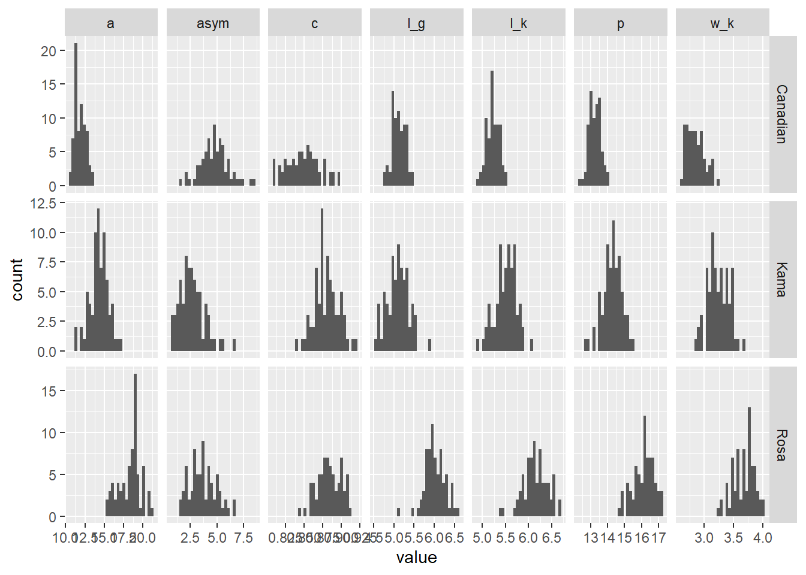
ggplot(temp,aes(x=a, y=asym)) + geom_point(aes(color = variety))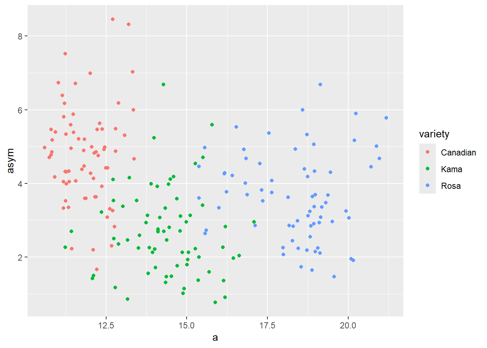
ggplot(seeds_df,aes(x=l_k, y=w_k)) + geom_point(aes(color=variety))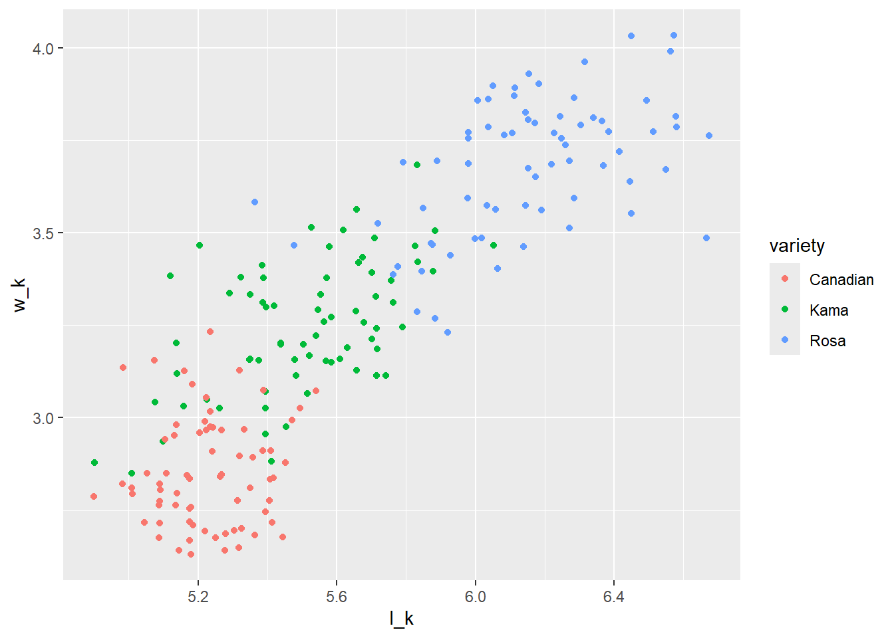
Make two separate dataframes where one is the complete cases dataframe and the other is the scaled complete cases. Check out the scale() function.
Why would we want two separate dataframes instead of doing it one pipe? Why should we scale the data before going to kmeans-clustering?
seeds_complete <- seeds_df |> drop_na()
seeds_scale <- seeds_complete |> select(-variety) |> scale(scale=TRUE)First let’s make a ‘knee’ plot to see the performance of kmeans with different number of clusters. Describe what each of the arguments do in the following code chunk. Interpret the results of the graph by making a figure caption in the code chunk.
fviz_nbclust(seeds_scale, FUNcluster = kmeans, method = 'wss', k.max = 10)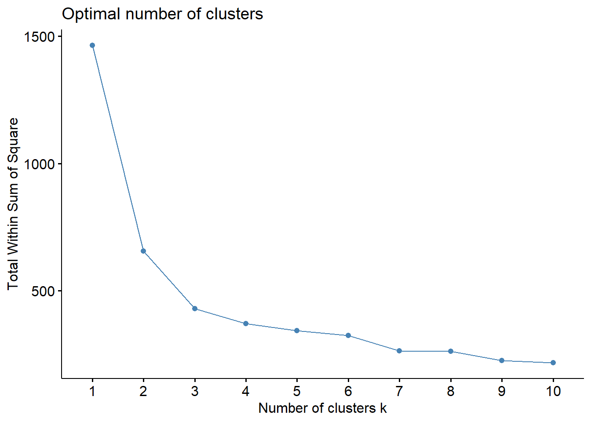
Now let’s have R recommend the number of clusters.
number_est <- NbClust(seeds_scale, min.nc = 2, max.nc = 10, method = "kmeans")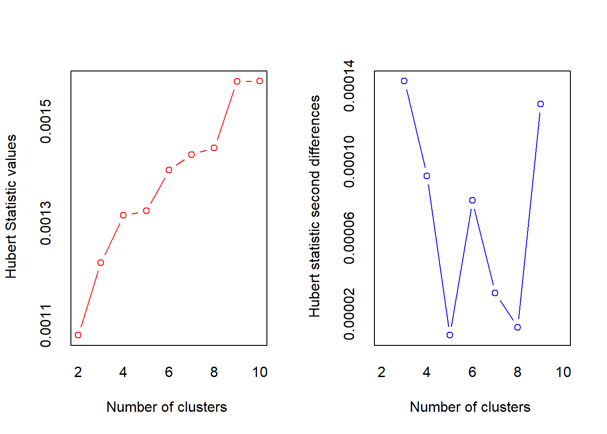
*** : The Hubert index is a graphical method of determining the number of clusters.
In the plot of Hubert index, we seek a significant knee that corresponds to a
significant increase of the value of the measure i.e the significant peak in Hubert
index second differences plot.
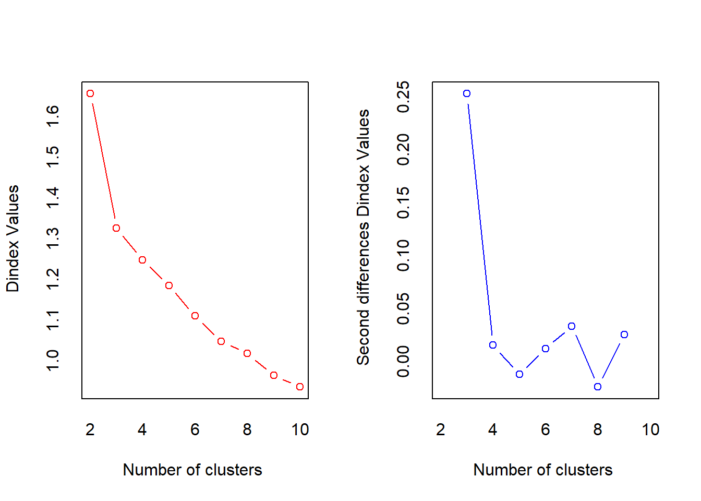
*** : The D index is a graphical method of determining the number of clusters.
In the plot of D index, we seek a significant knee (the significant peak in Dindex
second differences plot) that corresponds to a significant increase of the value of
the measure.
*******************************************************************
* Among all indices:
* 10 proposed 2 as the best number of clusters
* 11 proposed 3 as the best number of clusters
* 1 proposed 6 as the best number of clusters
* 1 proposed 10 as the best number of clusters
***** Conclusion *****
* According to the majority rule, the best number of clusters is 3
******************************************************************* number_est$All.index
KL CH Hartigan CCC Scott Marriot TrCovW TraceW
2 3.1131 255.8548 110.3673 0.4501 367.7176 273825799 18818.017 656.0328
3 7.3485 249.7842 29.4175 3.4020 701.5813 125661910 6527.810 428.6082
4 0.8625 199.0276 27.6455 2.0546 797.7872 141292997 5204.928 375.2763
5 1.4608 175.3590 20.8806 -5.6296 913.7325 127103573 4250.067 330.8728
6 0.5890 157.9781 27.2156 -5.5554 1038.3365 101118518 3231.826 300.2865
7 5.2960 152.9939 11.3170 -4.4620 1149.1575 81196769 2591.849 264.9409
8 0.2125 139.3751 24.1892 -4.9134 1202.8870 82111944 2434.134 250.9507
9 2.2158 138.8896 14.1729 -3.7504 1309.0729 62677486 1860.910 224.1134
10 0.5253 133.0721 21.8981 -3.5527 1348.5466 64119813 1631.635 209.3516
Friedman Rubin Cindex DB Silhouette Duda Pseudot2 Beale Ratkowsky
2 1108.941 2.2301 0.3746 0.8495 0.4658 1.4473 -42.0322 -1.3926 0.4861
3 1620.742 3.4134 0.3408 1.0047 0.4007 1.2136 -17.0743 -0.7922 0.4793
4 1931.333 3.8985 0.3596 1.2348 0.3107 1.1931 -13.4327 -0.7264 0.4268
5 2213.288 4.4216 0.4176 1.2235 0.2958 0.9890 0.7018 0.0497 0.3907
6 2528.252 4.8720 0.3167 1.4272 0.2475 1.4795 -20.4182 -1.4398 0.3618
7 2871.436 5.5220 0.3741 1.2783 0.2661 1.0400 -1.6544 -0.1708 0.3407
8 2953.746 5.8298 0.3685 1.2918 0.2492 2.3095 -24.3813 -2.4527 0.3209
9 3119.916 6.5279 0.3560 1.3140 0.2476 1.2068 -4.7979 -0.7433 0.3060
10 3188.735 6.9882 0.3440 1.2690 0.2445 5.7881 -31.4348 -3.3574 0.2920
Ball Ptbiserial Frey McClain Dunn Hubert SDindex Dindex SDbw
2 328.0164 0.6743 0.9472 0.4520 0.0870 0.0011 1.3004 1.6554 1.0153
3 142.8694 0.6428 1.8529 0.9303 0.1188 0.0012 1.3752 1.3248 0.5283
4 93.8191 0.5714 0.7305 1.3357 0.0729 0.0013 1.6602 1.2470 0.5455
5 66.1746 0.5470 1.1509 1.5878 0.0789 0.0013 1.6308 1.1843 0.4923
6 50.0478 0.4976 0.4964 2.0632 0.0763 0.0014 1.9312 1.1093 0.3661
7 37.8487 0.4830 1.7386 2.2813 0.0689 0.0014 1.8761 1.0465 0.2698
8 31.3688 0.4595 0.3711 2.5656 0.0773 0.0014 1.9692 1.0170 0.2406
9 24.9015 0.4360 0.5135 3.0126 0.0734 0.0016 1.9137 0.9634 0.2584
10 20.9352 0.4221 0.0229 3.2661 0.0598 0.0016 1.8636 0.9352 0.1874
$All.CriticalValues
CritValue_Duda CritValue_PseudoT2 Fvalue_Beale
2 0.7258 51.3895 1.0000
3 0.7182 38.0649 1.0000
4 0.7014 35.3328 1.0000
5 0.6693 31.1297 0.9998
6 0.6481 34.2015 1.0000
7 0.6446 23.7043 1.0000
8 0.5494 35.2663 1.0000
9 0.5581 22.1725 1.0000
10 0.4004 56.8966 1.0000
$Best.nc
KL CH Hartigan CCC Scott Marriot TrCovW
Number_clusters 3.0000 2.0000 3.0000 3.000 3.0000 3 3.00
Value_Index 7.3485 255.8548 80.9497 3.402 333.8637 163794976 12290.21
TraceW Friedman Rubin Cindex DB Silhouette Duda
Number_clusters 3.0000 3.0000 3.0000 6.0000 2.0000 2.0000 2.0000
Value_Index 174.0927 511.8014 -0.6982 0.3167 0.8495 0.4658 1.4473
PseudoT2 Beale Ratkowsky Ball PtBiserial Frey McClain
Number_clusters 2.0000 2.0000 2.0000 3.000 2.0000 1 2.000
Value_Index -42.0322 -1.3926 0.4861 185.147 0.6743 NA 0.452
Dunn Hubert SDindex Dindex SDbw
Number_clusters 3.0000 0 2.0000 0 10.0000
Value_Index 0.1188 0 1.3004 0 0.1874
$Best.partition
[1] 1 1 1 1 1 1 1 1 3 1 1 1 1 1 1 1 1 1 1 2 1 1 1 1 1 1 1 1 1 1 1 1 1 1 1 1 1
[38] 3 1 1 1 1 1 1 1 1 1 1 1 1 1 1 1 1 1 1 1 1 1 2 2 2 1 2 1 1 1 1 1 2 3 3 3 3
[75] 3 3 3 3 3 3 3 3 3 3 3 3 3 3 3 3 3 3 3 3 3 3 3 3 3 3 3 3 3 3 3 3 3 3 3 3 3
[112] 3 3 3 3 3 3 3 3 3 3 3 3 3 1 3 3 3 3 3 3 3 1 3 3 1 3 1 1 3 2 2 2 2 2 2 2 2
[149] 2 2 2 2 2 2 2 2 2 2 2 2 2 2 2 2 2 1 2 2 2 2 2 2 2 2 2 2 2 2 2 2 2 2 2 2 2
[186] 2 2 2 2 2 2 2 2 2 2 2 2 1 2 1 2 1 2 2 2 2 2 2 2 2The nbclust package runs k-means under the hood, but doesn’t provide a usuable dataframe to manipulate objects. Run kmeans in the following code chunk with the kmeans() function. What arguments should you include?
set.seed(10101)
seeds_km <- kmeans(seeds_scale, centers = 3, nstart = 50) # kmeans specifying 3 groups to start
seeds_kmK-means clustering with 3 clusters of sizes 72, 71, 67
Cluster means:
a p c l_k w_k asym
1 -1.0277967 -1.0042491 -0.9626050 -0.8955451 -1.082995635 0.69314821
2 -0.1407831 -0.1696372 0.4485346 -0.2571999 0.001643014 -0.66034079
3 1.2536860 1.2589580 0.5591283 1.2349319 1.162075101 -0.04511157
l_g
1 -0.6233191
2 -0.5844965
3 1.2892273
Clustering vector:
[1] 2 2 2 2 2 2 2 2 3 2 2 2 2 2 2 2 2 2 2 1 2 2 2 2 2 2 2 2 2 2 2 2 2 2 2 2 2
[38] 3 2 2 2 2 2 2 2 2 2 2 2 2 2 2 2 2 2 2 2 2 2 1 1 1 2 1 2 2 2 2 2 1 3 3 3 3
[75] 3 3 3 3 3 3 3 3 3 3 3 3 3 3 3 3 3 3 3 3 3 3 3 3 3 3 3 3 3 3 3 3 3 3 3 3 3
[112] 3 3 3 3 3 3 3 3 3 3 3 3 3 2 3 3 3 3 3 3 3 2 3 3 2 3 2 2 3 1 1 1 1 1 1 1 1
[149] 1 1 1 1 1 1 1 1 1 1 1 1 1 1 1 1 1 2 1 1 1 1 1 1 1 1 1 1 1 1 1 1 1 1 1 1 1
[186] 1 1 1 1 1 1 1 1 1 1 1 1 2 1 2 1 2 1 1 1 1 1 1 1 1
Within cluster sum of squares by cluster:
[1] 144.5954 144.4586 139.5542
(between_SS / total_SS = 70.7 %)
Available components:
[1] "cluster" "centers" "totss" "withinss" "tot.withinss"
[6] "betweenss" "size" "iter" "ifault" Examine the output of the kmeans object. Which column contains the classfiication? Join the cluster labels to the non-scaled data.
seeds_cl <- data.frame(seeds_complete, cluster_no=factor(seeds_km$cluster))Now make a ggplot of of area on the x-axis, asymmetric coefficient on the y-axis, color by the cluster numbers from kmeans, and use shape for the variety column.
### On your own:
### Plot area and asymmetric index, and include cluster number and variety for comparison:
ggplot(seeds_cl,aes(x=a, y=asym)) + geom_point(aes(color=cluster_no, shape=variety, alpha=l_g))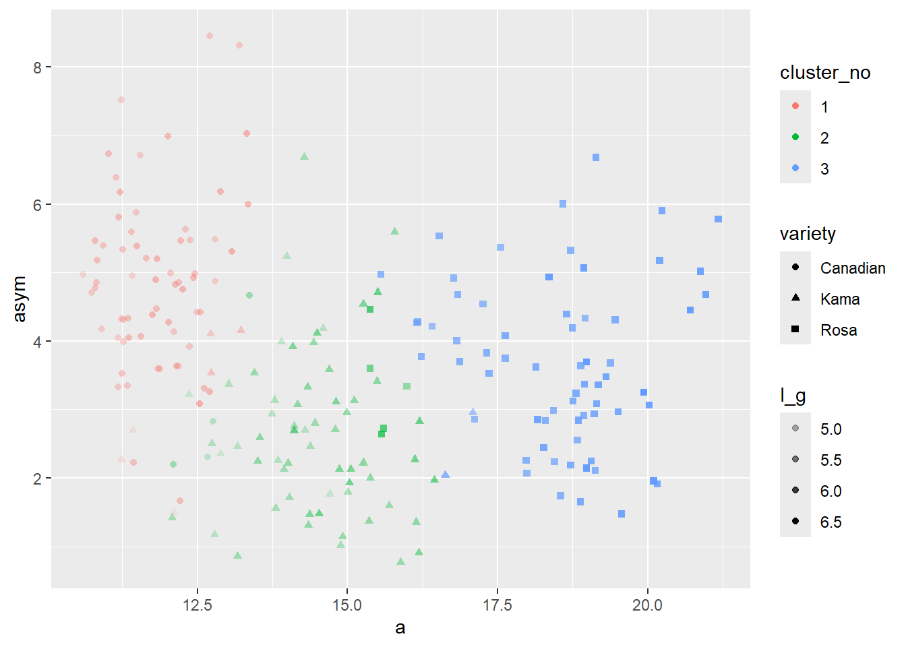
What do we see from this graph?
Can you make a table to show the comparison between the variety and defined clusters?
seeds_cl |>
select(variety, cluster_no) |> table() |> knitr::kable()| 1 | 2 | 3 | |
|---|---|---|---|
| Canadian | 66 | 4 | 0 |
| Kama | 6 | 62 | 2 |
| Rosa | 0 | 5 | 65 |
In this section, we’ll be performing hierarchical cluster analysis (& making dendrograms) in R. From lecture you should understand agglomerative versus divisive clustering, as well as differences in linkages (complete, single, average).
We will use the stats::hclust() function for agglomerative hierarchical clustering, first checking how well our clusters compare to using WorldBank environmental data (simplified), wb_env.csv.
Here, we’ll read in the WorldBank environmental data (simplified), and keep only the top 20 GHG emitters for this dataset. Examine the dataframe.
# Get the data
wb_env <- read_csv(here::here("data","wb_env.csv"))Write pseducode for what we will need to do for hierarchical clustering
Slice the top 20 emitters
drop.na
select only numeric
scale data
distance <- get it
run hclust
linkages either single or complete
make our dendgrograms
# Only keep top 20 greenhouse gas emitters (for simplifying visualization here...)
wb_ghg_20 <- wb_env %>%
slice_max(ghg, n=20)# Scale the numeric variables (columns 3:7)
wb_scaled <- wb_ghg_20 %>%
select(3:7) |> #hard code, issue if you change your data frame
#select(-c(name, region))
scale()
rownames(wb_scaled) <- wb_ghg_20$nameUse the stats::dist() function to find the Euclidean distance in multivariate space between the different observations (countries):
euc_distance <- dist(wb_scaled, method = "euclidean")The stats::hclust() function performs hierarchical clustering, given a dissimilarity matrix (our matrix of euclidean distances), using a linkage that you specify.
Here, let’s use complete linkage (recall from lecture: clusters are merged by the smallest maximum distance between two observations in distinct clusters).
# Hierarchical clustering (complete linkage)
hc_complete <- hclust(euc_distance, method = "complete" )
# Plot it
p_complete<-ggdendrogram(hc_complete,
rotate = TRUE) +
theme_minimal() +
labs(x = "Country")Let’s update the linkage to single linkage (recall from lecture: this means that clusters are merged by the smallest distance between observations in separate clusters):
# Make single cluster here and plot it
# Hierarchical clustering (complete linkage)
hc_single <- hclust(euc_distance, method = "single" )
# Plot it
p_single<-ggdendrogram(hc_single,
rotate = TRUE) +
theme_minimal() +
labs(x = "Country")Use patchwork to compare the two outputs and add a descriptive figure caption to the joined plot.
library(patchwork)
pa_dend <- (p_single+p_complete)
pa_dend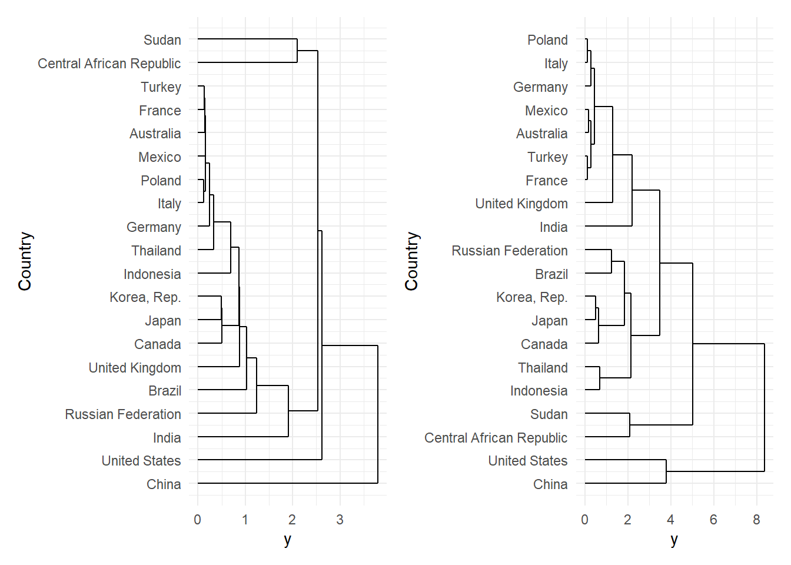
We can cluster the groupings by pruning the dendrogram using the cutree function. Feel free to choose any groupings
# Prune the dendrogram to show only the top 5 clusters
hc_cut <- cutree(hc_complete, k = 5)
# Add cluster number to the data
wb_ghg_20 <- wb_ghg_20 %>%
mutate(cluster = hc_cut)
ggplot(wb_ghg_20, aes(x = reorder(name, cluster), y = ghg, fill = factor(cluster))) +
geom_col() +
coord_flip() +
theme_minimal() +
labs(x = "Country", y = "GHG emissions (kt CO2e)", fill = "Cluster")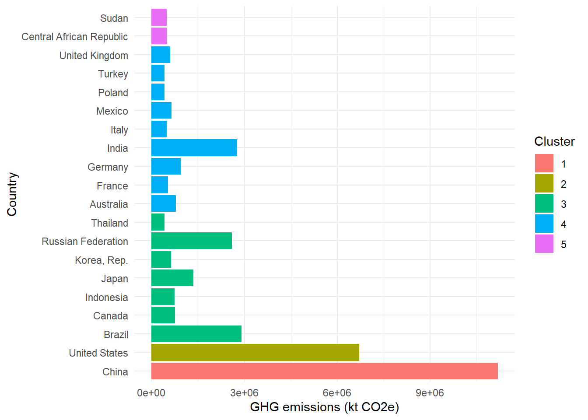
There are currently more features in base R to handle dendrograms than ggplot2. If you want to explore more, check out the dendextend package. Also check out this link
Here’s an example of how you could color the groups we found.
# Color the branches by cluster
dend_complete <- as.dendrogram(hc_complete)
dend_complete %>%
set("branches_k_color", k = 5) %>%
plot(main = "Complete linkage clustering")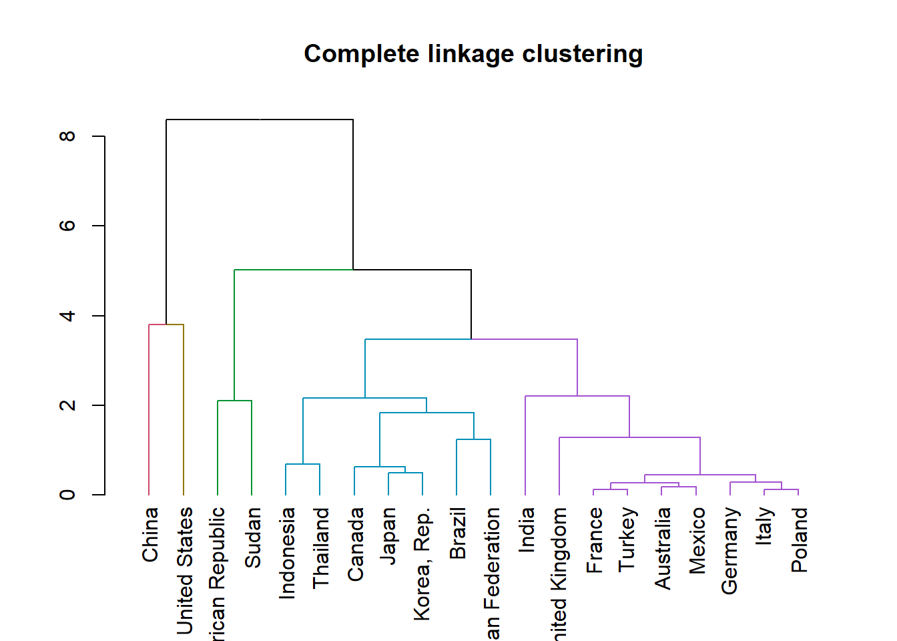
Let’s make a tanglegram to compare clustering by complete and single linkage! We’ll use the dendextend::tanglegram() function to make it.
First, we’ll convert to class dendrogram, then combine them into a list:
# Convert to class dendrogram
dend_complete <- as.dendrogram(hc_complete)
dend_simple <- as.dendrogram(hc_single)Cool, now make a tanglegram:
# Make a tanglegram
tanglegram(dend_complete, dend_simple)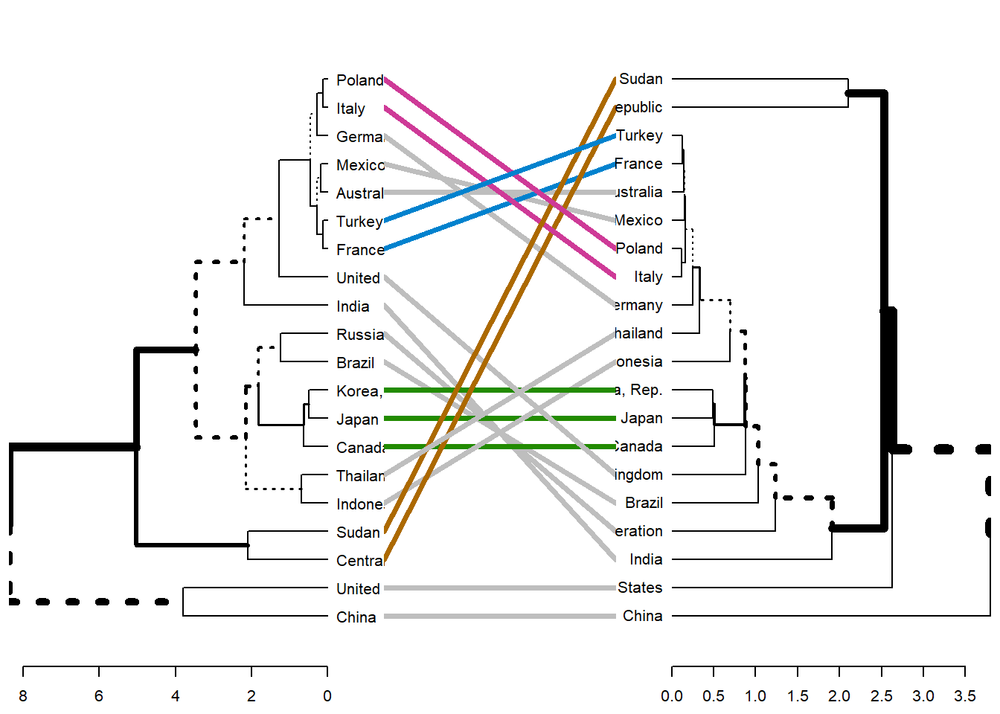
That allows us to compare how things are clustered by the different linkages!
Untangling:
entanglement(dend_complete, dend_simple) # lower is better[1] 0.3959222#> [1] 0.3959222
untangle(dend_complete, dend_simple, method = "step1side") %>%
entanglement()[1] 0.06415907# [1] 0.06415907Notice that just because we can get two trees to have horizontal connecting lines, it doesn’t mean these trees are identical (or even very similar topologically):
untangle(dend_complete, dend_simple, method = "step1side") %>%
tanglegram(common_subtrees_color_branches = TRUE)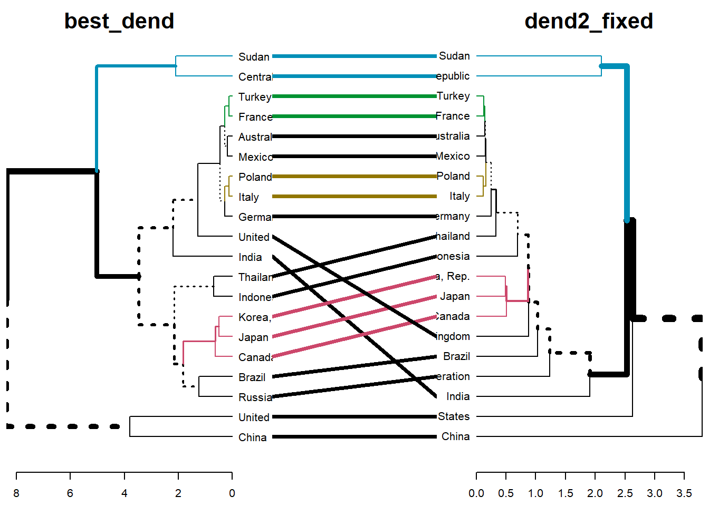